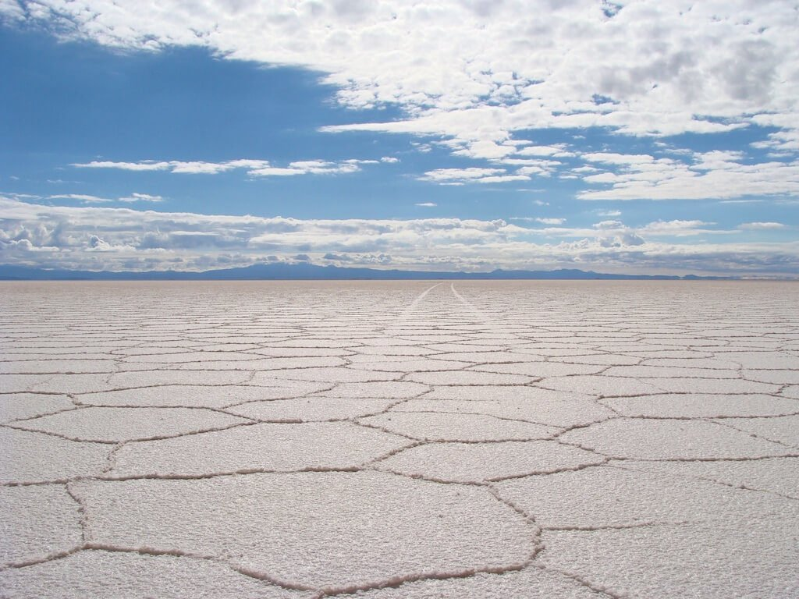

L’exploitation des salars en bolivie:
Le lithium, atome omniprésent dans le domaine du stockage de l’électricité, justifie-il la destruction du patrimoine naturel bolivien?
En quoi est-ce une controverse
Comme déja mentionné précédement, aujourd’hui, la manière la plus efficace de stocker de l’électricité dans un package
compact, efficace et performant est d’utiliser une batterie au lithium. Qu’elle soit de type LiPo
(Lithium Polymer, capable de délivrer beaucoup de courant rapidement), ou de type Li-ion (Lithium
ion, capable de stocker une grande charge), elles
sont aujourd’hui omniprésentes dans nos
quotidiens et absolument nécessaires pour nos
smartphones et ordinateurs portables en tous
genres.
Cependant, le lithium se fait de plus en
plus rare ; en effet, avec la grande croissance
d’achat de smartphones de ces dernières années
(on mentionnera aussi leur tendance à être
jetable, c’est-à-dire qu’ils sont renouvelés tous
les 6 mois), le besoin en lithium a augmenté de
manière très forte, pour ne pas dire
exponentielle ; et les exploitations de lithium se
font, même au détriment de la nature.

Citons l’exemple du désert d’Uyuni, en Bolivie,
la plus grande réserve de lithium. Pendant
longtemps, le tourisme fut la seule richesse du
salar d’Uyuni, mais depuis peu, les magnifiques
paysages blancs ont laissé place aux
exploitations du précieux lithium. De plus,
l’exploitation du lithium a de graves
conséquences écologiques : afin d’extraire le
précieux métal alcalin, il faut d’énormes
quantités d’eau, pompées dans les nappes
phréatiques. Ces tonnes de saumure contiennent le lithium. L'évaporation de l'eau des bassins est
un processus naturel qui dure douze mois. On obtient des sels riches en minéraux de toutes sortes.
Les rivières sont aussi à sec, et tout cela se répercute sur les cultivateurs environnants, qui n’ont
plus de quoi irriguer leurs cultivations.
La controverse se distingue ici: exploiter pour obtenir le Lithium, ou préserver un élément du patrimoine environnmental Bolivien?